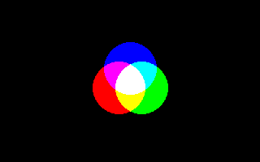

Or (Paramètre Put graphique)

Paramètre de la déclaration graphique Put qui utilise la manipulation de bits Or comme méthode de transformation image
Put [ target, ] [ STEP ] ( x,y ), source [ ,( x1,y1 )-( x2,y2 ) ], Or
Or
La méthode Or combine chaque pixel source avec chaque pixel correspondant de la destination, en utilisant la fonction de manipulation de bits Or. Le résultat est renvoyé comme pixel destination.
Cette méthode fonctionne dans tous les modes graphiques. Il n'y a pas de masque de couleur, donc les valeurs de couleur de 0 (RGBA(0, 0, 0, 0) en modes pleine couleur) n'auront aucun effet, en raison du comportement de Or.
En mode pleine couleur, chaque composante (rouge, vert, bleu et alpha) est conservée dans un ensemble discret de bits, ainsi l'opération peut affecter seulement certains canaux, en s'assurant que toutes les valeurs des autres canaux sont mises à 0.
Syntaxe
Put [ target, ] [ STEP ] ( x,y ), source [ ,( x1,y1 )-( x2,y2 ) ], Or
Paramètres
Or
Obligatoire.
Description
La méthode Or combine chaque pixel source avec chaque pixel correspondant de la destination, en utilisant la fonction de manipulation de bits Or. Le résultat est renvoyé comme pixel destination.
Cette méthode fonctionne dans tous les modes graphiques. Il n'y a pas de masque de couleur, donc les valeurs de couleur de 0 (RGBA(0, 0, 0, 0) en modes pleine couleur) n'auront aucun effet, en raison du comportement de Or.
En mode pleine couleur, chaque composante (rouge, vert, bleu et alpha) est conservée dans un ensemble discret de bits, ainsi l'opération peut affecter seulement certains canaux, en s'assurant que toutes les valeurs des autres canaux sont mises à 0.
Exemple
''Ouvre une fenetre graphique
ScreenRes 320, 200, 16
''Cree 3 sprites contenant cercles rouges, verts et bleus
Const As Integer r = 32
Dim As Any Ptr cr, cg, cb
cr = ImageCreate(r * 2 + 1, r * 2 + 1, RGBA(0, 0, 0, 0))
cg = ImageCreate(r * 2 + 1, r * 2 + 1, RGBA(0, 0, 0, 0))
cb = ImageCreate(r * 2 + 1, r * 2 + 1, RGBA(0, 0, 0, 0))
Circle cr, (r, r), r, RGB(255, 0, 0), , , 1, f
Circle cg, (r, r), r, RGB(0, 255, 0), , , 1, f
Circle cb, (r, r), r, RGB(0, 0, 255), , , 1, f
''Put le sprite avec trois niveaux multiplieur
''differents, se recouvrant dans le milieu
Put (146 - r, 108 - r), cr, Or
Put (174 - r, 108 - r), cg, Or
Put (160 - r, 84 - r), cb, Or
''Libere la memoire utilisee par les sprites
ImageDestroy cr
ImageDestroy cg
ImageDestroy cb
''Pause du programme avant fermeture
Sleep
ScreenRes 320, 200, 16
''Cree 3 sprites contenant cercles rouges, verts et bleus
Const As Integer r = 32
Dim As Any Ptr cr, cg, cb
cr = ImageCreate(r * 2 + 1, r * 2 + 1, RGBA(0, 0, 0, 0))
cg = ImageCreate(r * 2 + 1, r * 2 + 1, RGBA(0, 0, 0, 0))
cb = ImageCreate(r * 2 + 1, r * 2 + 1, RGBA(0, 0, 0, 0))
Circle cr, (r, r), r, RGB(255, 0, 0), , , 1, f
Circle cg, (r, r), r, RGB(0, 255, 0), , , 1, f
Circle cb, (r, r), r, RGB(0, 0, 255), , , 1, f
''Put le sprite avec trois niveaux multiplieur
''differents, se recouvrant dans le milieu
Put (146 - r, 108 - r), cr, Or
Put (174 - r, 108 - r), cg, Or
Put (160 - r, 84 - r), cb, Or
''Libere la memoire utilisee par les sprites
ImageDestroy cr
ImageDestroy cg
ImageDestroy cb
''Pause du programme avant fermeture
Sleep

Différences avec QB
- Aucune
Voir aussi